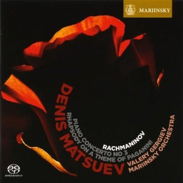

SACD
Piano Concerto No 3 & Rhapsody On A Theme Of Paganini
Denis Matsuev, Valery Gergiev, Orchestra Of The Mariinsky Theatre, Sergei Vasilyevich Rachmaninoff
Media: — · Sleeve: —
—
Personal
Discogs SuggestedCA$31.24
Discogs MedianCA$31.24
Discogs HighCA$31.24
- Physical Copy ID
- BB-SACD-055
- Year
- 2009
- Label
- Mariinsky
- Catalog #
- MAR0505
- Country
- RURussia
- Genre / Style
- Classical · Late Romantic